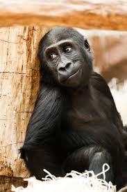
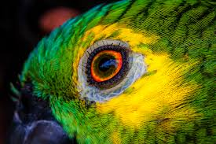
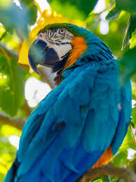

Aqui você descobre animais incríveis de forma moderna, interativa e visualmente agradável — tudo pensado para aproximar você do mundo da natureza.
Nosso zoológico mostra espécies de diferentes habitats, curiosidades, comportamentos e informações essenciais sobre preservação ambiental.
Explore cada parte e descubra como pequenas atitudes podem transformar o futuro da vida selvagem no planeta.